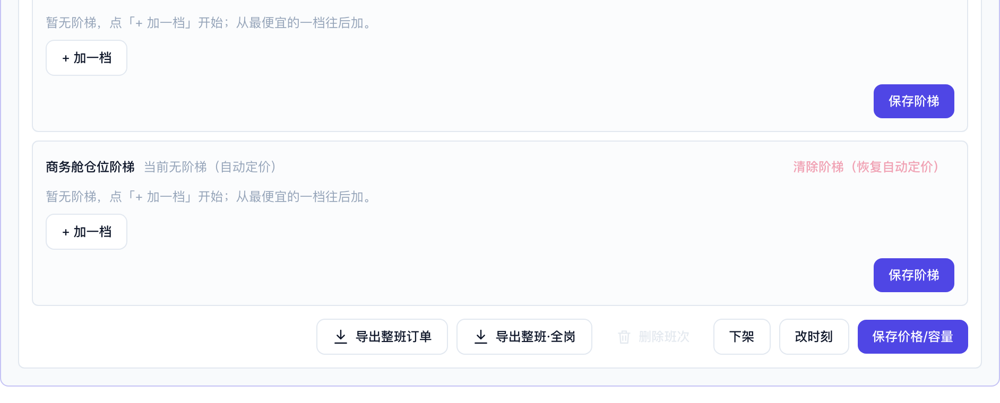
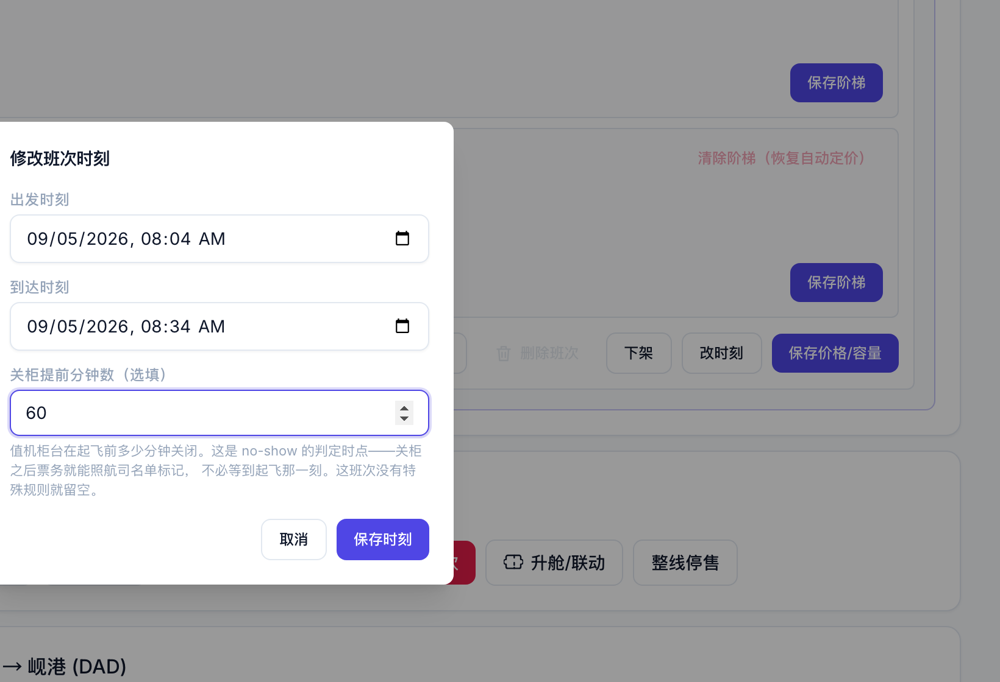
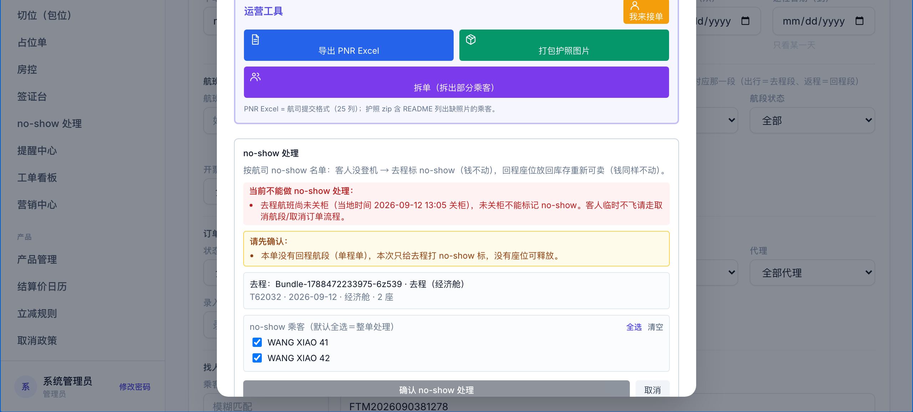
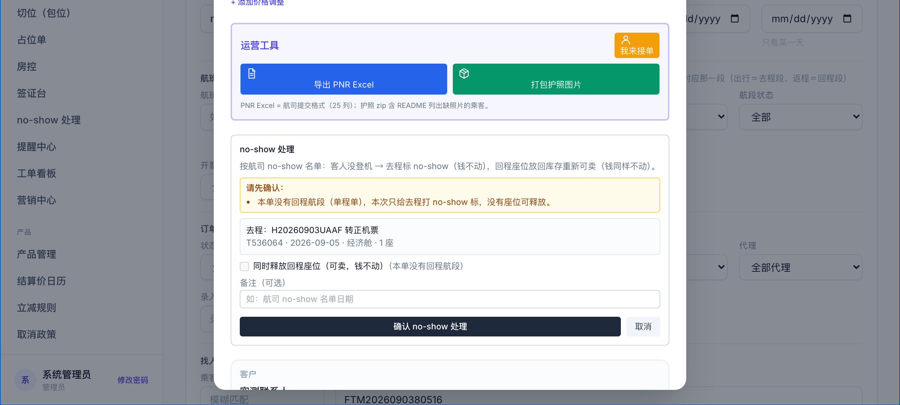
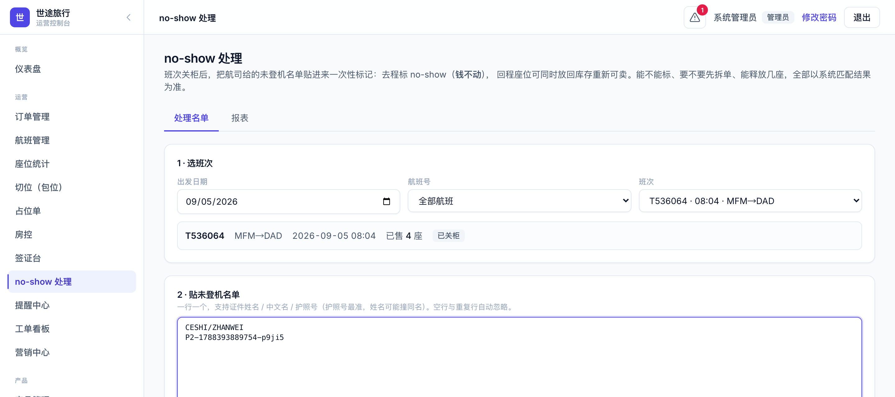
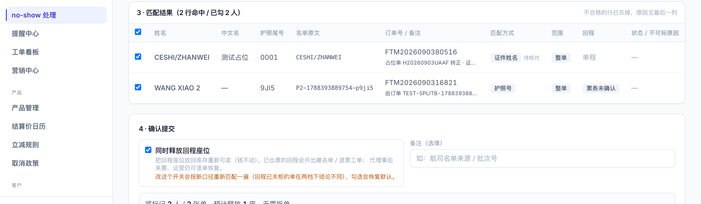

关柜提前分钟数怎么配 · 关柜后能做什么不能做什么 · 批量页与匹配表的变化 · 2026-09-04
关柜时间 = 该班次起飞时间 − 关柜提前分钟数。提前分钟数没填就按系统默认 45 分钟。举例：15:45 起飞、没单独设置 → 15:00 关柜；到了 15:00 就可以标 no-show，不用等到 15:45。
什么时候要设：某个航司 / 某一班关柜不是提前 45 分钟（比如提前 60 分钟）。其余班次不用管，默认就是 45。

航班管理 → 展开航班 → 点班次格子 → 班次详情面板底部的「改时刻」

改时刻弹窗：「关柜提前分钟数」选填，留空即默认 45
入口没变：订单详情 → 「no-show 处理」。变的是能不能标的时间点，以及提示文案。
面板会直接告诉你还没关柜、什么时候关柜，此时不能标。客人临时不飞请走「取消航段 / 取消订单」。

未关柜：红字写明当地时间几点关柜，「确认」按钮不可用
能标了。去程打 no-show 标（钱不动）；有回程的单可以勾「同时释放回程座位」——但要看回程这一班关没关柜，见下一节。

已关柜：可以确认标记；单程单会提示没有回程座位可释放
这段一般就是 45 分钟。柜台关了，座位就算放回库存也没人能值机——所以：
| 动作 | 回程那一班关柜后 | 为什么 |
|---|---|---|
| 标去程 no-show | 可以 | 看的是去程那一班关没关柜 |
| 同时释放回程座位 | 不行，勾选会被拦，只能记录 no-show | 关柜后放回库存的座位没人能值机，等于凭空多卖 |
| 恢复回程（代理来要座位） | 不行 | 占回去也上不了飞机 |
| 作废回程 | 要等起飞后（系统起飞满 2 小时自动作废） | 作废是座位确实消耗掉之后的动作 |

批量页：抬头与班次角标改为关柜口径

匹配表：订单号下带备注；回程列写「票务已确认 / 未确认」
| 以前 | 现在 |
|---|---|
| 起飞后才能标 no-show | 关柜后就能标（默认起飞前 45 分钟） |
| 关柜时间系统里没有 | 班次「改时刻」里可填「关柜提前分钟数」，留空用默认 |
| 回程起飞前都能释放 / 恢复座位 | 回程关柜后就不能释放、不能恢复，等起飞后作废 |
| 批量页角标「已起飞 / 未起飞」 | 「已关柜 / 未关柜」 |
| 匹配表回程列「已出票 / 未出票」 | 「票务已确认 / 票务未确认」，并在订单号下显示备注 |